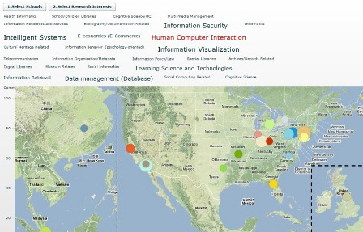
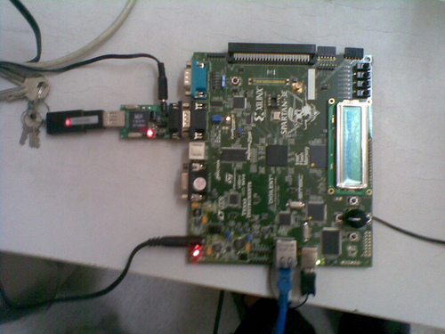
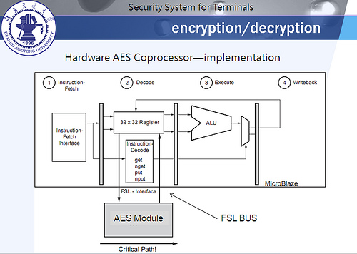

Portfolio
Sketch for Fun!
Conference Navigator - New!
Conference Navigator is a personal conference scheduling tool with social linking and recommendation features. The system is developed as part of a NSF-supported project by Peter Brusilovsky and Jung Sun Oh from the University of Pittsburgh iSchool. Users can control access to their information.
My part in the team is interaction design and front-end developing. 
Touch the iSchool - accepted by iConference 2011!
[pdf]Designing public touchscreen display system for iSchool community
- A public touchscreen display system providing research talks, events, announcements, jobs and other useful information to iSchool.
- Designed and developed with Adobe Illustrator, Photoshop, Flash Catalyst, Flex framework.
-Users can view different categories of information and send interesting information in email, either to themselves or to their friends. Authorized users can also publish announcements to the screen via a blog.
-The system updates the latest information every 10 minutes and is easy configurable that only requires internet connection on the running machine.
New Student Welcome Package - New!
A touchscreen application providing useful information to new students
Visualizing iSchools
A flex+actionscript project to show research interests of iSchool faculties around the world.
Flickr on the fly - Information Visualization and Web Technology & Services
- SearchTag - An Ajax application to search for interesting photos from Flickr.
- Twinkle - An even-more-fun animated Ajax application to discover interesting photos by tags on Flickr.


Dynamic MSIS Course Planning
An ASP.NET project to dynamically planning courses for MSIS students.
Motion-based Interactive Game
Terminal Information Security System based on Xilinx FPGA
- AES hardcore with 4x performance against software running on Pentium 3
- IP-layer and application-layer filtering of malicious data
- USB Flash disk viruses isolation

